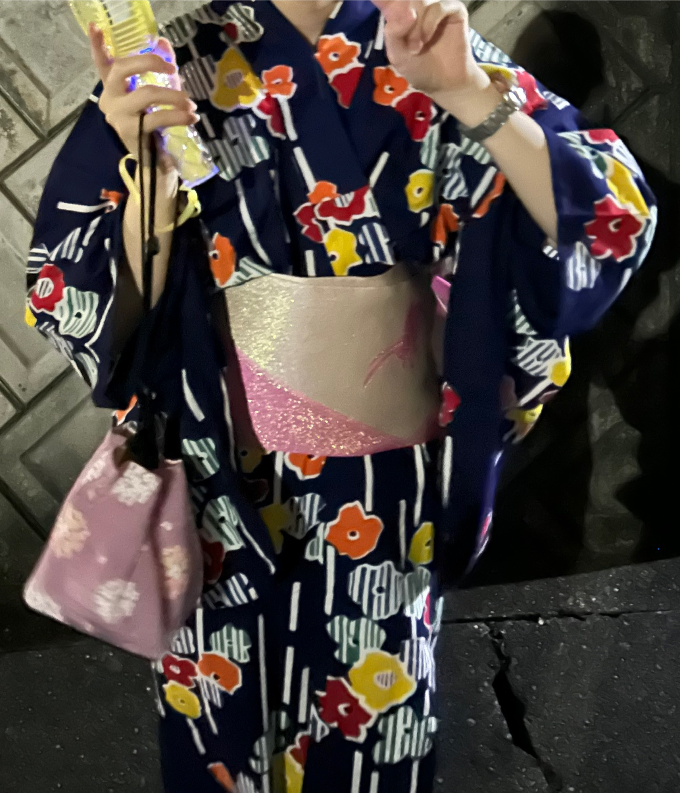
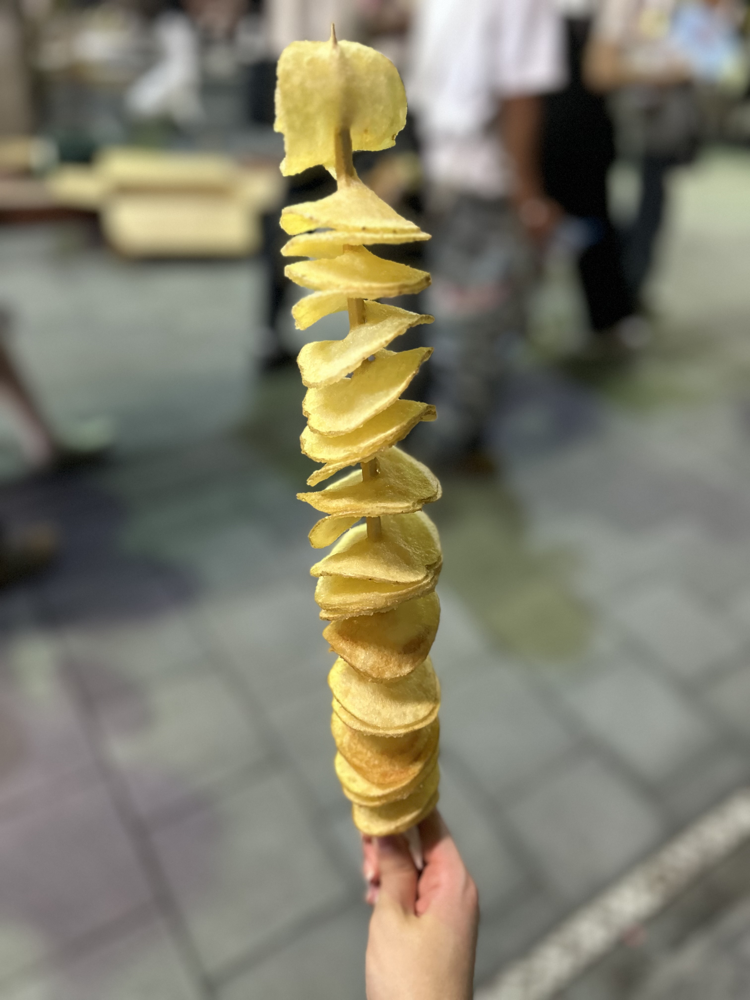

Wear & Log
Wear & Log
服の写真と、外出先での出来事を掲載します。服の簡単な説明や、その日の内容を短く書きます。
更新スケジュール：毎週日曜日（その週で最も印象に残った日更新）、月末（その月の総括）
- 服装のポイント
- 外出先
- その日の感想
- 夏祭りでお出かけ


- 服装のポイント： 紺地にカラフルな花柄の浴衣。キラキラしたピンクのグラデーション帯と、同系色のバッグを合わせてポップな雰囲気にしました。
- 外出先： 夏祭り
- その日の感想： 久しぶりに浴衣を着てお祭りへ！屋台で買ったながーいトルネードポテトが美味しくて大満足でした。暑かったけれど光るハンディファンも大活躍！